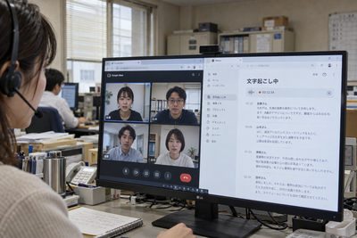
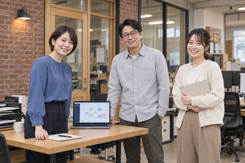
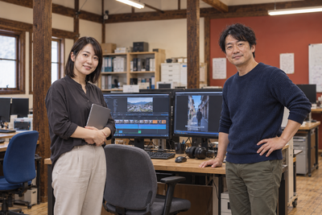
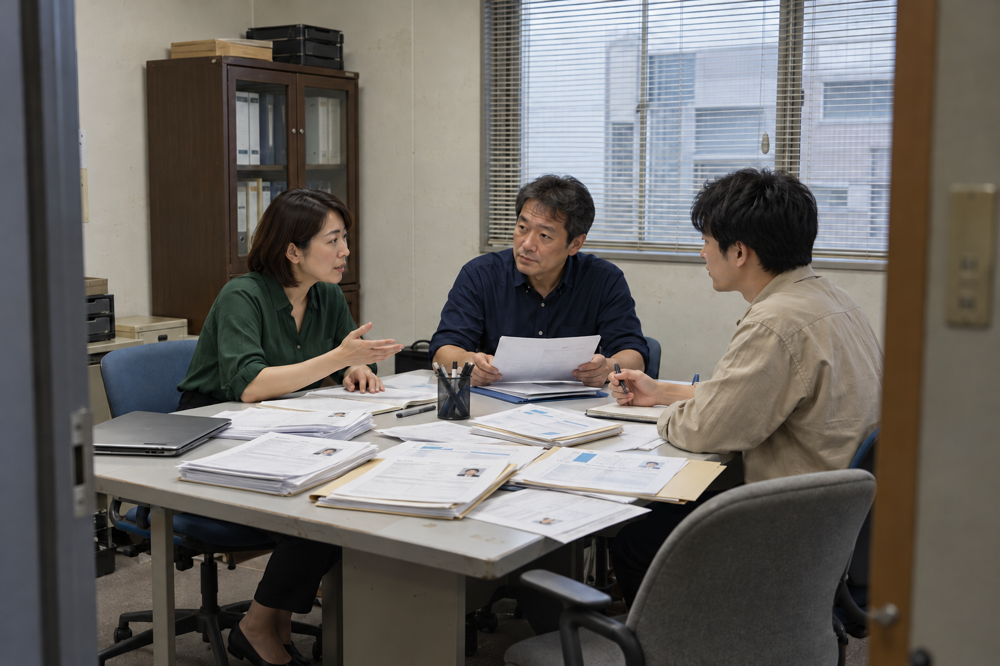
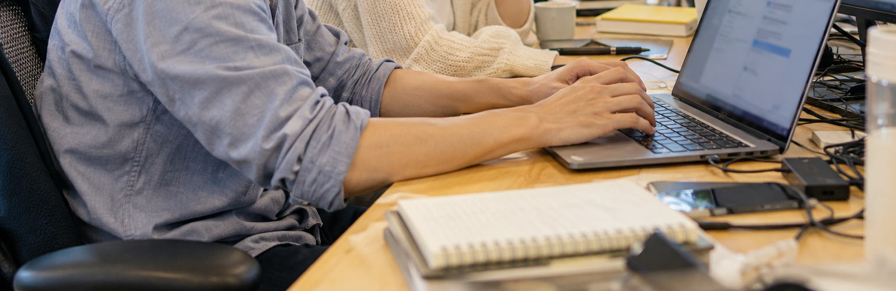
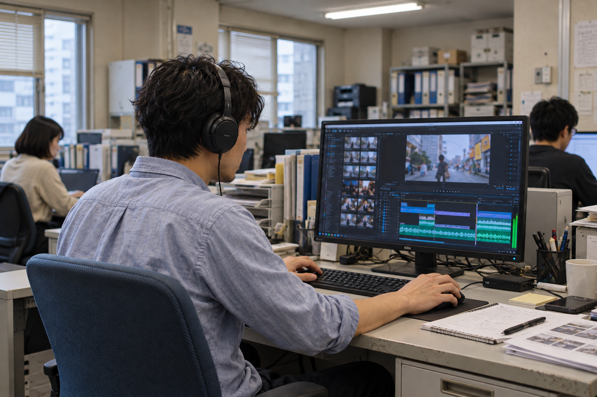

法人向けの生成AI導入と業務改善生成AIを、
100人超シフト業務を改善
約5分の1シフトの対応期間
6分野AI活用と業務改善
生成AIを、
現場の力に。
シフト、採用、日報と週報。
毎日くり返す業務を、使いやすい仕組みに。
生成AIの導入から実務への活用まで、
現場に合わせた業務改善を支援します。
課題の整理から、仕組みづくりと活用研修まで。
会社の仕事に合わせた、
AI活用支援。
業務の自動化シフト、採用、報告
生成AIの導入と研修導入、基礎、活用
アプリ制作現場の手順を形に
現場の業務から設計既存の道具も活用人の確認を組み込む
シフトの対応期間は、支援先の業務状況について伺った目安です。約1週間から約1日への改善事例をご紹介しています。
導入実績
事例シフト業務の自動化
100人超のシフト業務を、約1週間から約1日に。
希望の回収、編成、関係者への共有までを見直し、回収と共有を自動化。一連の業務の対応期間が従来の約5分の1になりました。
自動化済み事例を読む事例採用業務の効率化とフロー構築
書類選考の視点を揃え、人の確認を支える。
多数の応募書類を扱う負担と、判断のばらつきに対応する履歴書判定の仕組みを構築しています。
履歴書フィルター運用中事例を読む
事例生成AIの導入研修と活用研修生成AIを、自社の仕事で活かす。
導入、基礎、活用を、経験に合わせて整理。身近な業務を題材に、使い方と出力の確かめ方を学びます。
導入仕組み構築済事例を読む
事例アプリ制作現場の手順に合わせた、業務アプリを実装。
シフト作成アプリを制作。入力から編成、確認まで、使う人の仕事に合わせて形にしています。
アプリ実装済事例を読む
事例動画編集とYouTubeチャンネル運用動画編集を、一連の制作フローに。
音声処理、縦型化、字幕、書き出しをつなぎ、人が完成物を確認する流れを構築しています。
編集フロー構築済み事例を読む事例日報と週報の管理自動化
日報の入力から、週報と部長への報告まで。
Gemで入力した日報を記録し、組織ごとに集約。週報作成と部長への報告まで、業務の流れを半自動化しています。
Gem運用中、週報作成と報告を半自動化事例を読むいつもの仕事を、見直すきっかけに。毎日の仕事に、
毎日の仕事に、
こんな課題はありませんか？
希望の回収、編成、共有に、
応募書類が多く、
選考の判断も担当者ごとにばらつく。
日報の集計と週報の作成で、
報告するための作業が増えている。
生成AIを学んでも、
日々の業務で使いこなせない。
現場の課題に合わせて、業務の流れから整えます。
実際に構築し、業務へ取り入れた仕組みです。シフト、採用、報告。
シフト、採用、報告。
現場で進めた業務改善。
課題、整えた仕組み、仕事の変化を、具体的な取り組みからご紹介します。
シフト作成と共有ベンチャー企業の支援事例
100人超のシフト業務を改善100人超の
シフト業務を、
約1週間から約1日に。
希望を集め、シフトを編成し、関係者へ共有する。100人を超えるシフト業務を、前後の受け渡しまで含めて見直しました。
回収と共有を自動化し、シフト作成アプリも実装しています。担当者がほぼ1週間張り付いていた業務が、約1日で対応できるようになりました。
シフト改善の事例を見る回収と共有の手作業を、
仕組みに置き換えました。
Before
改善前
回収から共有まで、
担当者がほぼ1週間張り付いて対応。
- 人が対応希望を回収
100人超の希望を
担当者が集める - 人が対応シフトを編成
希望と条件を
見比べて調整する - 人が対応関係者へ共有
担当者や医師へ
シフトを渡す
各工程の手作業を、担当者が抱える。
After
改善後
回収と共有を自動化し、
担当者は編成と確認に集中。
- 自動化希望を回収
集まる希望を
仕組みでまとめる - 人が編成・確認シフトを編成
集まった情報をもとに
人が編成して確認する - 自動化関係者へ共有
担当者や医師への
受け渡しを自動化する
人が判断する仕事に、時間を使う。
一連の業務にかかる対応期間
希望の回収から、編成、共有まで。
対応期間が、従来の約5分の1に。
支援先の業務状況について伺った目安です。図の長さは、従来を5とした対応期間の比較です。各工程の所要時間を示すものではありません。

採用業務と書類選考
履歴書判定の仕組みを実運用中書類選考の視点を揃え、
必要な面接に時間を。
多数の応募書類を扱う負担と、担当者による判断のばらつきに対応。共通の観点で書類を確認し、人の判断を支える履歴書判定の仕組みを構築しました。
書類で確認できることを、一次面接や二次面接で繰り返さない。忙しい現場スタッフや管理職が、必要な面接に時間を使える流れを目指します。効率だけでなく、選考の品質も入口から整える支援です。
確認する観点を揃えます。
担当者ごとの経験や印象に依存しにくい、共通の視点を整理します。
書類の確認を支えます。
構築した履歴書判定の仕組みを、実際の採用業務で活用しています。
必要な面接へつなぎます。
書類で確かめることと、面接で向き合うことを分けて考えます。

日報と週報ベンチャー企業の支援事例
Gemで運用し、週報作成と報告を半自動化日報の入力から、
週報の報告までつなぐ。
何を書けばよいのか、誰が読むのか、何に使うのか。書く人と読む人の目的を揃え、日報を迷わず残せる仕組みを整えています。
日報の入力内容を記録し、組織ごとに集約して週報作成を支援します。さらに上の部長クラスが確認するところまで、報告の流れを半自動化しています。
書く人と読む人の目的を揃え、報告を次の仕事に活かす仕組みです。
日報と週報の事例を見る日報を、組織で活かせる報告へ。
書く人から読む人まで、報告の流れをひとつに。
はじめに、人が整えること書く項目と、報告を読む相手を決めます。
書く目的を共有- 01スタッフが入力
日報を入力
今日やったこと、成果、今後に活かしたいことを入力します。
- 02仕組みが自動化
入力内容を記録
日報の入力内容を、スプレッドシートへ自動反映します。
- 03仕組みが支援
組織別に週報化
日報を集約し、週報作成と上位者への報告を半自動化します。
- 04部長が確認
週報を確認
取り組みと成果を把握し、次の仕事へ活かせる報告にします。
あなたの会社で、時間がかかっている仕事もお聞かせください。
業務改善について相談する生成AIを、日々の業務で活用するために。学びと実装で、
学びと実装で、
現場の仕事を前へ。
生成AIの導入研修と活用研修自社の仕事を題材に学ぶ、
自社の仕事を題材に学ぶ、
生成AI研修。
導入、基礎、活用を、経験に合わせて整理。身近な業務を題材に、指示の出し方と出力の確かめ方を学び、日々の仕事に取り入れる方法を考えます。
01導入を知る02基礎を試す03仕事で活かす
生成AIの導入支援を見る
編集フロー構築済みくり返す動画編集を、
くり返す動画編集を、
一連の制作フローに。
音声処理、縦型化、見出しや字幕、書き出しをつなぎ、人が完成物を確認する制作の流れを整えています。
ベンチャー企業の制作支援として、繰り返す処理と、完成物を人が確かめるところを一連の仕事にしています。
動画編集の事例を見る
アプリ実装済現場の手順に合わせた、
現場の手順に合わせた、
業務アプリを実装。
シフト作成アプリを制作し、動作する形に実装しています。入力から編成、確認まで、使う人の仕事に合わせて形にしています。
回収と共有の自動化と組み合わせ、アプリの役割を現場の仕事から考えています。
アプリ制作の事例を見るYouTubeチャンネル運用実績90日間で、
90日間で、
約163万回の視聴。
集計期間は90日間です。
から
まで。
動画編集の仕組みづくりに加え、YouTubeチャンネルの運用にも取り組んでいます。
- 視聴回数
- 約163万回
- エンゲージビュー
- 約74万
- 高評価数
- 4,217件
- チャンネル登録者の増加
- +214人
上記期間のYouTubeアナリティクスに基づく集計です。視聴回数とエンゲージビューは、万単位の整数に丸めています。
タイガーラボが選ばれる5つの理由現場の業務に、
現場の業務に、
AIが活きる5つの理由。
仕事の改善で大切にしていることを、実際の取り組みとともにご紹介します。
- 01業務を把握手順と担当を確認
- 02課題を整理負担の原因を整理
- 03改善を設計優先するテーマを設計
- 01入力必要な情報を入力
- 02記録情報を記録して保持
- 03確認人が内容を確認
- 01学ぶ仕事に合う使い方を学ぶ
- 02試す小さく試して確かめる
- 03仕事に活用日々の業務へ取り入れる
- 01既存ツール今ある道具を使う
- 02情報を連携受け渡しをつなぐ
- 03共有次に使う人へ渡す
- 01自動化繰り返す作業を仕組みに
- 02人が確認判断する部分を確かめる
- 03業務で運用使う人まで含めて整える
現在の業務に合わせて、一歩ずつ。相談から導入まで、
相談から導入まで、
業務改善の進め方。
いまの業務を一緒に整理し、小さく試しながら、現場で使える形へ進めます。
- 01STEP 01
業務と課題を整理
いまの手順と、困っていることを一緒に整理します。
この段階で整理することいまの業務と困りごと - 02STEP 02
改善する対象を決定
改善する仕事と、人が確認する場所を決めます。
この段階で整理すること改善する仕事と確認の担当 - 03STEP 03
小さく試して確認
既存の道具や教材を使い、仕事に合う形を試します。
この段階で整理すること動作と仕事への合い方 - 04STEP 04
運用と使い方を整備
使う人の学びも含めて、実務での進め方を考えます。
この段階で整理すること使い方と運用の手順
気になることから、お聞かせください。
よくあるご質問
どんな業務から相談できますか？
毎月繰り返すシフトの回収や受け渡し、応募書類を扱う仕事、日報と週報などが入口になります。現在の手順と困っていることを伺い、対象となる業務を整理します。
新しくアプリを作る必要がありますか？
既存のツールや、今の業務の進め方を整えることで改善できる場合もあります。仕事の目的と利用環境に合わせ、使い続けられる方法を考えます。
シフトはすべて自動で決まりますか？
100人超のシフト情報の回収、編成、共有を含む業務が、約1週間から約1日で対応できるようになった事例を紹介しています。人が確認する仕事を含む一連の改善であり、すべての勤務条件を自動で決めるという意味ではありません。
保育や飲食など、ほかの業種でも相談できますか？
シフト、採用、報告などの共通する仕事も、業種や現場の手順に合わせて考えます。まず現在の仕事と条件を伺い、改善する対象を整理します。
小さな「たいへん」から、ご相談ください。その業務、
業務改善を相談するその業務、
AIと仕組みで変えてみませんか？
シフト、採用、報告など、時間のかかる仕事から。
現在の業務を伺い、会社に合う改善方法を一緒に考えます。